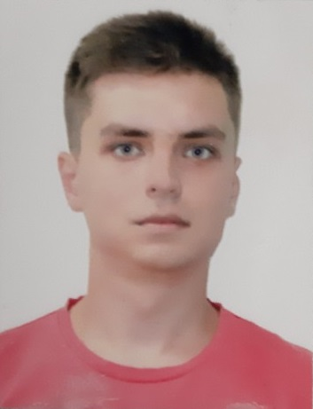

массажист-эстет
| Телефон | 098 214 66 57 |  |
| kondratenkodima364@gmail.com | ||
| Дата рождения | 16.12.1993 |
Цель:хочу найти работу, где смогу развивать свои способности и развиваться.
Образование:
| 20.11.2015 | Прохождение обучения в учебном центре "ProMassage" по программе: "Классический оздоровительный массаж" |
| 06.04.2016 | Закончил курсы в обучающем центре "NATEO". Прошел теоретический и практический курс обучения по программой "Массажист-универсал": классический массаж, спортивный массаж, лимфодренажный массаж, релакс массаж, мягкие мануальные техники. |
| 02.01.2017 | Прошел мастер-класс в "Академии профессиональной подготовки специалистов индустрии красоты".Курс кавитации и RF лифтинга |
Владение языками:
При необходимости способен освоить разговорный уровень языка за 7 месяцев
Массажные навыки: владение основными массажными техниками , подбор правильной программы для похудения, индивидуальный подход к каждому клиенту
| 20.04.2016 - 20.12.2016 | Салон бьюти-индустии "NATEO" |
| 17.02.2017 - по теперешнее время | Салон коррекции фигуры "Slim line centre" |